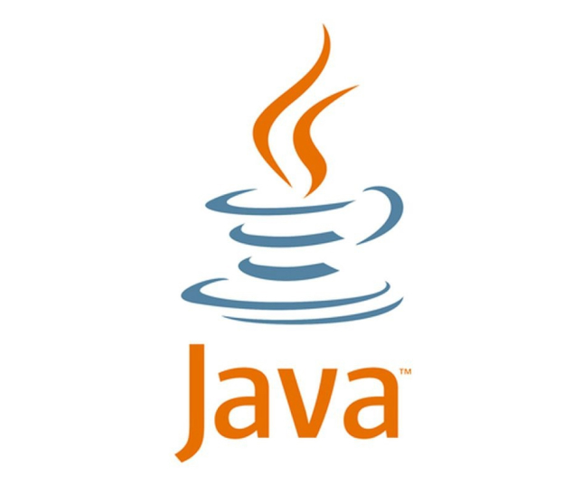
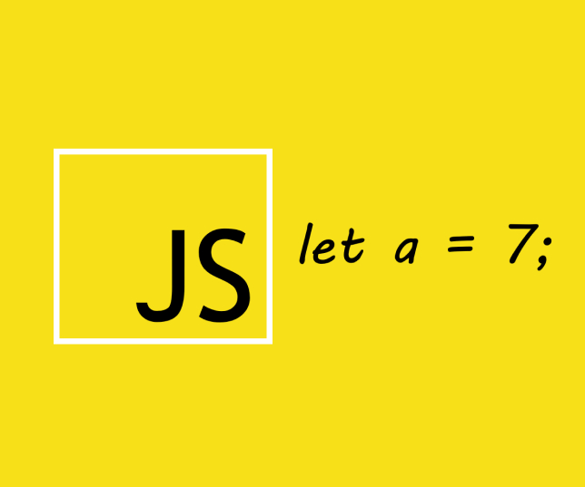
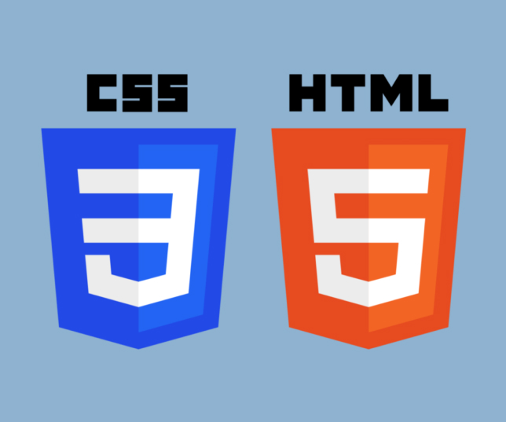
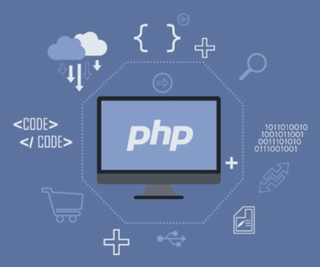
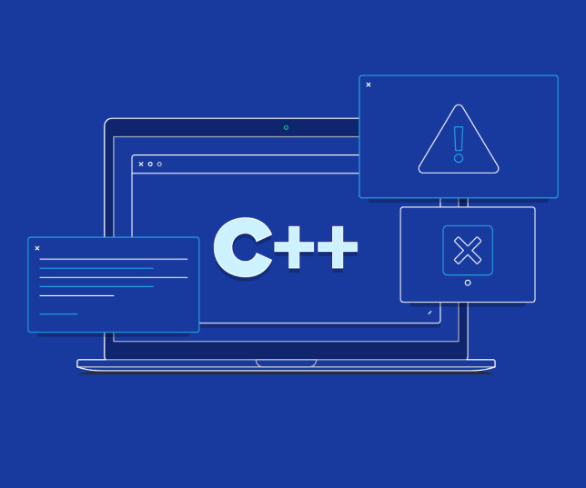

5 найпопулярніших мов програмування
За останні декілька років професія програміста стала однією з найбільш затребуваних та популярних в Україні. Кількість ІТ компаній, яким потрібні нові розробники зростає з кожним днем. Це призводить до великого попиту на ІТ спеціалістів та росту заробітної плати в даній сфері.
Java
Надзвичайно поширена мова, адже 90% компаній, що входять в список Fortune (500 найбільших корпорацій світу), так чи інакше використовують в своїх розробках Java. До речі її використовують при розробці операційної системи Android, яка на даний час є найбільш мобільною платформою в світі. Мова була розроблена ще в 1995 році, компанією Oracle і досі залишається на вершині. ЇЇ використовують для розробки десктопних додатків, операційних систем, “back end” систем та багато іншого. Основна її перевага це кросплатформеність. Тому вивчивши цю мову, ви отримаєте безліч можливостей при працевлаштуванні.
Javascript
Хоч і назва цієї мови схожа з попередньою мовою Javascript, це зовсім інша мова програмування. Згідно з сайтом Stackoverflow, Javascript – це найпопулярніша мова програмування серед розробників. Ця мова використовується як одна з основних технологій для створення інтерактивних сайтів разом з HTML та CSS. Адже більшість браузерів використовують саме ці три основні технології. Також, використовуючи її, можна створювати мобільні додатки, ігри та десктопні програми. Тому, якщо ви плануєте розвиватись саме в цих сферах, варто спробувати починати саме з цієї мови програмування.
HTML та CSS
Хоч і назва цієї мови схожа з попередньою мовою Javascript, це зовсім інша мова програмування. Згідно з сайтом Stackoverflow, Javascript – це найпопулярніша мова програмування серед розробників. Ця мова використовується як одна з основних технологій для створення інтерактивних сайтів разом з HTML та CSS. Адже більшість браузерів використовують саме ці три основні технології. Також, використовуючи її, можна створювати мобільні додатки, ігри та десктопні програми. Тому, якщо ви плануєте розвиватись саме в цих сферах, варто спробувати починати саме з цієї мови програмування.
РНР
Хоч і назва цієї мови схожа з попередньою мовою Javascript, це зовсім інша мова програмування. Згідно з сайтом Stackoverflow, Javascript – це найпопулярніша мова програмування серед розробників. Ця мова використовується як одна з основних технологій для створення інтерактивних сайтів разом з HTML та CSS. Адже більшість браузерів використовують саме ці три основні технології. Також, використовуючи її, можна створювати мобільні додатки, ігри та десктопні програми. Тому, якщо ви плануєте розвиватись саме в цих сферах, варто спробувати починати саме з цієї мови програмування.
C++
Хоч і назва цієї мови схожа з попередньою мовою Javascript, це зовсім інша мова програмування. Згідно з сайтом Stackoverflow, Javascript – це найпопулярніша мова програмування серед розробників. Ця мова використовується як одна з основних технологій для створення інтерактивних сайтів разом з HTML та CSS. Адже більшість браузерів використовують саме ці три основні технології. Також, використовуючи її, можна створювати мобільні додатки, ігри та десктопні програми. Тому, якщо ви плануєте розвиватись саме в цих сферах, варто спробувати починати саме з цієї мови програмування.
